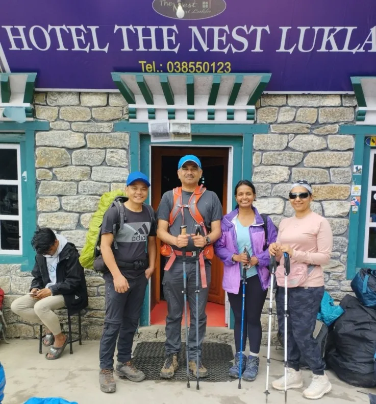
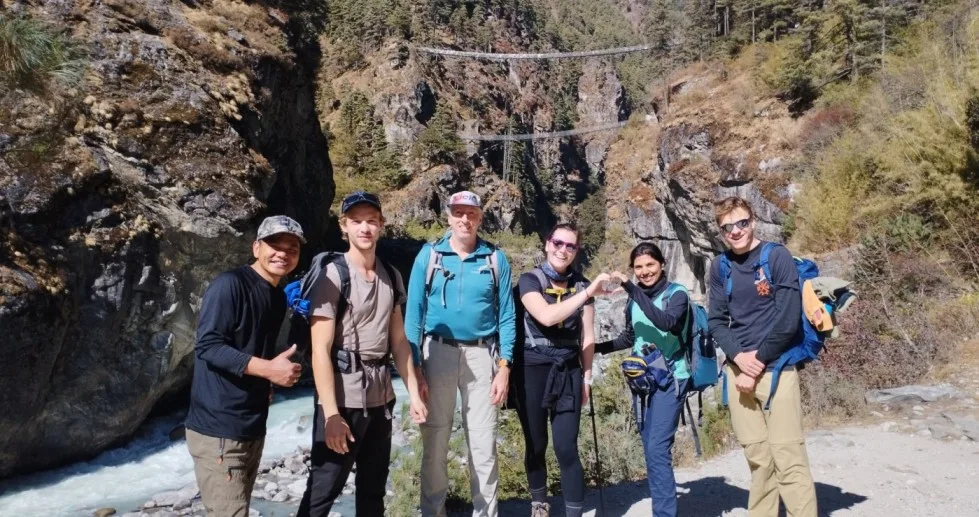
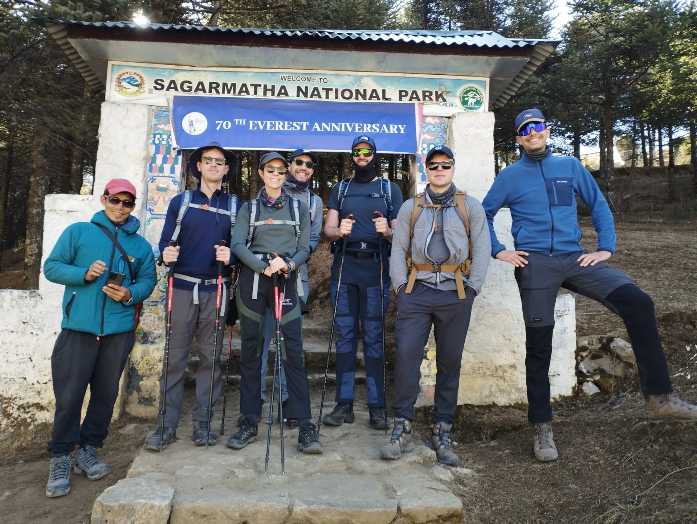
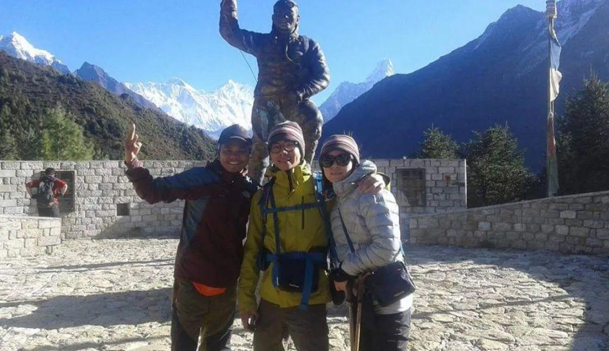
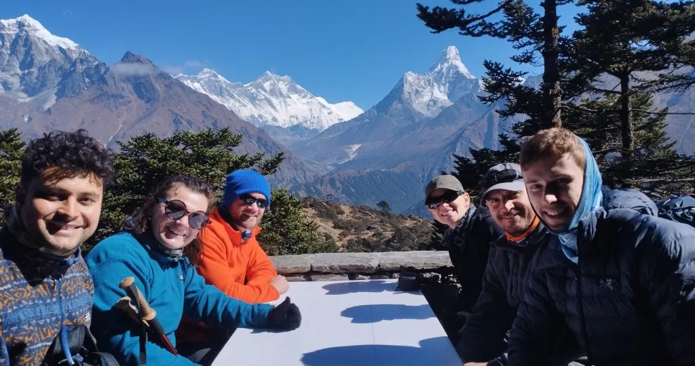
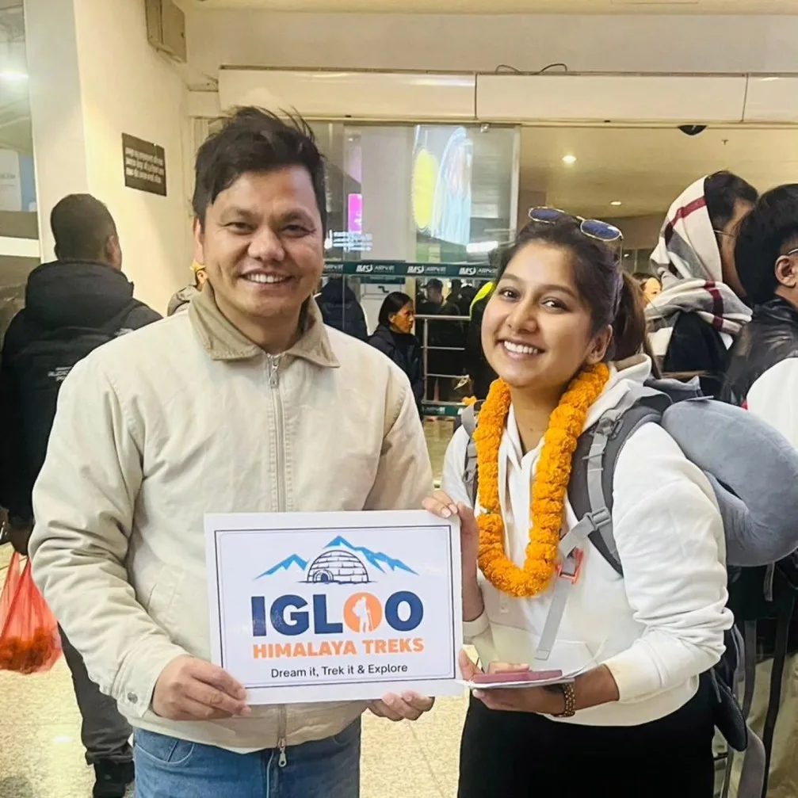
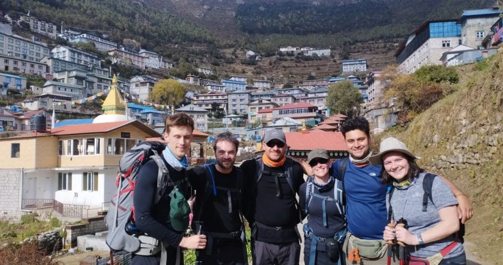

1. Executive Summary: How Hard Is the Everest View Trek?
The Everest View Trek (also widely known as the Everest Panorama Trek or Tengboche Trek) is officially rated as a Moderate (Grade 2 out of 5) Himalayan trekking route.
Unlike the grueling 14-day expedition to Everest Base Camp (5,364m) and Kala Patthar (5,545m), the Everest View Trek tops out at 3,880 meters (12,730 feet) at the Hotel Everest View ridge, or 3,867 meters (12,687 feet) at Tengboche Monastery. This critical altitude ceiling keeps you strictly below the acute high-altitude danger zone where atmospheric pressure drops below 60%.
Key Difficulty Metrics at a Glance
- Official Grading: Moderate (Suitable for active beginners and adventurous families).
- Total Trekking Distance: 38 to 44 km (24 to 27 miles) round trip from Lukla.
- Trekking Duration: 5 to 7 days (4 to 6 walking hours per day).
- Maximum Elevation: 3,880m (Hotel Everest View) / 3,867m (Tengboche Monastery).
- Atmospheric Oxygen Available: ~64% of sea-level oxygen (vs. 51% at Kala Patthar).
- Trail Success Rate: Greater than 98% with standard Sherpa-led pacing.
However, calling the trek 'moderate' does not mean it is an effortless stroll. You will climb more than 2,500 vertical meters of cumulative stone staircases, negotiate sheer gorge suspension bridges, and hike up the notorious 600-meter vertical grunt of the Namche Hill in thin mountain air.
2. Elevation Profile & Altitude Ceiling (3,880m Safety Threshold)

In mountain medicine, altitude is the number-one arbiter of difficulty. When hiking above 3,000 meters, effective oxygen availability declines steadily with barometric pressure:
| Location / Landmark | Altitude (Meters / Feet) | Effective Oxygen vs Sea Level | Physiological Impact & Sensation |
|---|---|---|---|
| Kathmandu Valley | 1,400m / 4,593ft | 84% | Normal breathing, no altitude adjustment needed |
| Lukla Airstrip | 2,846m / 9,337ft | 72% | Cool alpine air; slightly elevated resting pulse |
| Phakding Village | 2,610m / 8,563ft | 74% | Lower than Lukla; excellent restful sleep on Night 1 |
| Namche Bazaar | 3,440m / 11,286ft | 67% | First true threshold; shortness of breath on staircases |
| Khumjung / HEV Ridge | 3,790m – 3,880m / 12,730ft | 64% | Maximum trek ceiling; mild exertion fatigue during climbs |
| Tengboche Monastery | 3,867m / 12,687ft | 64% | Steady rhythmic breathing; cold nights (-2°C to -8°C) |
| Everest Base Camp (EBC)* | 5,364m / 17,598ft | 53% | Severe lethargy, extreme cold, high risk of severe AMS |
| Kala Patthar Summit* | 5,545m / 18,192ft | 51% | Half the oxygen of sea level; immense cardiovascular strain |
*EBC and Kala Patthar shown for comparison only. Because the Everest View Trek turns around before entering the sub-4,000m glacial desert, your body never experiences the debilitating hypoxia that causes over 30% of standard EBC trekkers to suffer from acute mountain sickness.
Clinical studies conducted by the Himalayan Rescue Association (HRA) at Pheriche demonstrate that severe life-threatening forms of altitude illness (High Altitude Pulmonary Edema / HAPE and High Altitude Cerebral Edema / HACE) occur almost exclusively above 4,200 meters. By capping your maximum sleep elevation at 3,440m (or 3,867m at Tengboche), your physiological risk profile is minuscule compared to full Base Camp expeditions.
3. Day-by-Day Trail Breakdown, Distances & Terrain Gradients

Understanding what each day demands is the secret to pacing yourself. Here is the stage-by-stage technical profile for a standard 6-day Everest View Trek:
| Day | Route Segment | Distance (km) | Duration (hrs) | Elevation Gain / Loss | Terrain Grade & Crux |
|---|---|---|---|---|---|
| Day 01 | Lukla (2,846m) to Phakding (2,610m) | 7.8 km | 3.0 – 3.5 hrs | +120m / -350m (Net descent) | Gentle paved cobblestone; stone steps down; introductory easy stage |
| Day 02 | Phakding (2,610m) to Namche Bazaar (3,440m) | 10.5 km | 5.5 – 6.5 hrs | +920m / -90m (Steep gain) | River valley gentle until Hillary Bridge; then grueling 600m stone staircase climb |
| Day 03 | Namche Acclimatization Loop (Syangboche & Khumjung) | 5.5 km | 4.0 – 4.5 hrs | +440m / -440m (Circuit) | Steep rocky switchbacks up to Syangboche; wide panoramic descent into Khumjung |
| Day 04 | Namche to Tengboche Monastery (3,867m) [Optional] | 9.5 km | 5.0 – 6.0 hrs | +750m / -320m (Undulating) | Contour path out of Namche; steep 250m descent to river; punishing 600m switchback climb to monastery |
| Day 05 | Tengboche to Namche Bazaar (3,440m) | 9.5 km | 4.5 – 5.0 hrs | +320m / -750m | Steep descent to Phunki Thenga bridge; gentle steady contour climb back into Namche |
| Day 06 | Namche Bazaar to Lukla (2,846m) | 18.3 km | 6.5 – 7.5 hrs | +440m / -1,030m | Longest endurance day; punishing stone step descent on knees; undulating river path back to Lukla |
4. The Namche Hill (Hillary Bridge Climb): The Hardest Section

Ask any trekker who has walked the Everest trail what the single hardest section of the Everest View Trek is, and they will answer instantly: The Namche Hill.
Located on Day 2 immediately after crossing the breathtaking high Hillary Suspension Bridge (2,830m), the trail ascends over 610 vertical meters (2,000 feet) in just under 3.5 kilometers of steep, relentless switchbacks:
- Average Incline: Between 18% and 24% gradient, consisting of loose dirt, exposed pine roots, and rough-cut granite steps.
- The Altitude Surge: You start the climb at 2,830m (well within comfortable breathing range) and top out at 3,440m, crossing into the hypoxic zone where every step demands 30% more pulmonary effort.
- Heavy Traffic & Dust: The trail is a major trading artery. Packed yak trains, mule caravans, and porters carrying 60kg supply baskets generate airborne dust that can irritate your throat (the infamous 'Khumbu Cough').
- The Midpoint Reward: At roughly 3,140m, you reach the Top Danda Viewpoint (Everest View Rest Stop). On clear days, this is where you catch your very first glimpse of Mount Everest peeking over the Nuptse-Lhotse ridge!
Do NOT try to conquer the Namche Hill at your normal walking speed. Take half-steps. Match your breathing to your footfalls (inhale on one step, exhale on the next). Adopt the traditional Sherpa rest-step, locking your rear knee on each stride to shift weight entirely onto skeletal structure rather than burning quadriceps glycogen.
5. Altitude Sickness (AMS) Risks Below 4,000m & Acclimatization

Can you get Acute Mountain Sickness (AMS) on the Everest View Trek? Yes, absolutely. While severe complications are exceptionally rare, mild to moderate altitude symptoms can affect anyone who ascends too rapidly from Lukla to Namche Bazaar.
The human body requires 24 to 48 hours to initiate physiological compensatory mechanisms (hyperventilation, increased red blood cell production, and renal bicarbonate excretion).
| Severity Level | Common Symptoms | Frequency on Everest View Trek | Required Medical / Trail Action |
|---|---|---|---|
| Normal Physiological Adaptation | Slight breathlessness on hills, increased heart rate, vivid dreams | Experienced by ~90% of trekkers | Drink 4 liters of fluid; walk slowly; rest |
| Mild AMS (Grade 1) | Mild headache relieved by paracetamol, slight loss of appetite, insomnia | Experienced by ~15%–20% of trekkers | Remain at current altitude; do not ascend; rest an extra day in Namche |
| Moderate AMS (Grade 2) | Persistent throbbing headache, nausea, dizziness, extreme lethargy | Experienced by ~2%–3% of trekkers | Descend 300m–500m to Phakding or Monjo; consider Diamox (125mg–250mg) |
| Severe AMS / HAPE / HACE | Loss of balance (ataxia), confusion, gurgling chest cough, blue lips | Less than 0.1% on this route | Immediate emergency descent to Lukla / Kathmandu helicopter evacuation |
By following Igloo Himalaya Treks' standard itinerary—which includes two consecutive nights in Namche Bazaar with an active acclimatization hike to the Syangboche ridge (3,880m) and Khumjung (3,790m)—you give your body ample time to adjust before continuing forward.
6. Trail Conditions: Stone Stairs, Dust, and Knee/Joint Impact

Trekkers preparing for the Everest region often obsess about altitude but completely overlook the biomechanical strain of trail terrain:
The Stone Staircase Challenge
Himalayan trails are not smooth dirt paths. They are paved with centuries-old, hand-chiseled granite flagstones. Steps vary wildly in height—from 10 cm to over 35 cm. Ascending these steps requires immense quadricep power, while descending transmits repetitive ground impact directly into your patellar tendons and knee joints.
Suspension Bridges & Exposure
Between Lukla and Namche Bazaar, you cross five high steel suspension bridges swinging up to 130 meters above the churning torrent of the Dudh Koshi River. Trekkers with mild vertigo may find the visual exposure intimidating, though the bridges are reinforced with heavy steel mesh barriers.
Over 70% of trekking joint injuries occur on the final day descending from Namche Bazaar to Lukla. Trekkers relax mentally because they are going 'downhill,' but the repetitive eccentric braking contraction of descending 1,000 vertical meters over stone stairs can cause severe knee pain ('trekker's knee'). Always shorten your trekking poles for descents and take deliberate, soft-footed steps.
7. Weather, Temperatures & Seasonal Difficulty Variations

The difficulty of the Everest View Trek fluctuates drastically depending on the season in which you lace up your boots:
| Season | Daytime Temp (Namche) | Nighttime Temp (Namche) | Trail Conditions & Hazard | Difficulty Adjustment |
|---|---|---|---|---|
| Autumn (Oct – Nov) | 12°C to 16°C | -2°C to -6°C | Dry, clear, stable; crisp mornings; peak crowds | Optimal / Moderate (Best beginner window) |
| Spring (Mar – May) | 14°C to 18°C | 0°C to -4°C | Blooming rhododendrons; afternoon valley haze; warmer days | Moderate (Excellent conditions) |
| Winter (Dec – Feb) | 4°C to 8°C | -10°C to -18°C | Sub-zero freeze; black ice on shaded stone stairs; empty trails | Strenuous (Requires microspikes & heavy down) |
| Monsoon (Jun – Aug) | 16°C to 20°C | 8°C to 12°C | Heavy daily rain, slippery mud, leeches in lower forests, flight cancellations | Challenging / Not Recommended |
8. Physical Fitness Requirements: Are You Fit Enough?

You do not need to be an ultra-marathoner or competitive crossfit athlete to complete the Everest View Trek. However, you do need a solid base of cardiovascular endurance and lower-body stamina.
Readiness Benchmarks: Are You Ready?
- You can briskly walk 5 km (3 miles) on flat ground in under 45 minutes without stopping.
- You can climb 10 to 15 flights of stairs with a light daypack without collapsing in exhaustion.
- You can sustain a 3-hour weekend hike over rolling park trails or hills.
- You have no unmanaged cardiovascular or respiratory medical conditions.
Who Might Struggle?
- Completely sedentary individuals who do zero cardiovascular exercise.
- Hikers with acute, unmanaged chronic knee arthritis or patellar tendonitis.
- Trekkers attempting to carry a 15kg backpack without hiring a porter.
- Anyone who rushes uphill like a sprinter rather than walking at a Sherpa pace.
9. Everest View Trek vs. Full EBC: Side-by-Side Difficulty Matrix
To truly understand how manageable the Everest View Trek is, compare its technical parameters directly against the legendary full Everest Base Camp route:
| Difficulty Parameter | Everest View Trek (Panorama) | Classic Everest Base Camp (EBC) | Difficulty Delta / Impact |
|---|---|---|---|
| Total Trail Distance | ~40 km (25 miles) | ~130 km (81 miles) | Everest View requires less than 1/3 the mileage |
| Days on Mountain Trail | 5 to 6 Days | 12 to 14 Days | Significantly less cumulative physical fatigue |
| Maximum Altitude | 3,880m (Hotel Everest View) | 5,545m (Kala Patthar summit) | 1,665 vertical meters lower; vastly safer |
| Atmospheric Oxygen at Top | 64% of sea level | 51% of sea level | 25% more oxygen molecules per breath |
| Sub-Zero Nights in Teahouses | 1 to 2 nights (Tengboche) | 6 to 8 nights (Dingboche to Gorak Shep) | Vastly superior thermal comfort and restful sleep |
| Ensuite Bathrooms & Hot Showers | Available in Phakding & Namche | Non-existent above Dingboche (frozen buckets) | Clean hygiene drastically reduces trekker sickness |
| Glacial Moraine & Scree Walking | Zero (Well-defined stone trails) | Extensive (Khumbu Glacier loose boulders) | Zero danger of twisted ankles on glacial moraine |
| Overall Difficulty Grade | Moderate (2.5 / 5) | Strenuous (4.5 / 5) | Achievable for virtually any motivated walker |
10. 6-Week Step-by-Step Himalayan Training & Conditioning Plan

You don't need an expensive personal trainer to prepare for the Everest View Trek. Here is our field-tested 6-week preparation protocol:
| Training Phase | Cardiovascular Focus | Strength & Core Conditioning | Weekend Endurance Hike |
|---|---|---|---|
| Weeks 1 – 2 (Foundation) | 30 mins brisk walking, cycling, or swimming 3x/week at moderate heart rate | Bodyweight squats (3x15), lunges (3x10 per leg), calf raises, 30-sec planks | 60–90 min trail walk with empty daypack on rolling terrain |
| Weeks 3 – 4 (Stair Building) | 35–45 mins stairmaster or outdoor stadium stairs 3x/week | Step-ups onto 30cm bench (3x15), glute bridges, wall sits (60 sec) | 2 to 3-hour hike with 4 kg (9 lbs) weighted daypack |
| Week 5 (Peak Volume) | 45 mins stairmaster intervals (moderate/hard) 3x/week | Walking lunges with dumbbells (3x12), side planks, Romanian deadlifts | 3.5 to 4-hour mountain hike with 6 kg (13 lbs) pack in your actual hiking boots |
| Week 6 (Taper & Mobility) | 20 mins easy walking, gentle cycling 2x/week | Hamstring, quad, and hip flexor stretching, foam rolling | Rest weekend; hydrate, finalize gear checklist, rest for flight |
11. Is It Suitable for Beginners, Children & Seniors?
Yes—in fact, it is the premier Everest journey for multi-generational groups.
While we generally advise against taking children under 12 or seniors with limited mobility to Everest Base Camp (5,364m), the Everest View Trek is exceptionally well-suited for:
- Active Children (Ages 8–16): Kids adapt remarkably well to altitude if they are kept hydrated and walk at an easy pace. The suspension bridges, yak caravans, and wildlife (Himalayan Thar and Monal pheasants) keep younger hikers endlessly engaged.
- Senior Hikers (Ages 60–75+): Because daily stages average just 4 to 5 hours and medical help (Himalayan Rescue post at Khumjung and Kunde Hospital) is nearby, fit seniors routinely complete this trek in total safety.
- First-Time Mountain Hikers: If you have never trekked in high mountain ranges before, this route gives you the authentic Sherpa culture, high Himalayan views, and monastery experiences without the fear of extreme hypoxia.
For families with younger children or senior trekkers, ask your Igloo Himalaya Treks planner to split Day 2 into two short segments: hike from Phakding to Monjo (2,835m) on Day 2, and then tackle the Hillary Bridge and Namche Hill on fresh morning legs on Day 3. This reduces the Namche climb to a relaxed 3-hour morning hike!
12. Mental Demands & Teahouse Comfort as a Difficulty Reducer

On long mountaineering expeditions, mental exhaustion often breaks trekkers before physical exhaustion does. Shivering in a drafty, unheated plywood box at -15°C in Gorak Shep, using frozen squat toilets, and eating canned tuna drains your morale.
The Everest View Trek completely eliminates this hardship:
- Comfortable Lodging: In Phakding and Namche Bazaar, you can stay in high-quality lodges with private western flush toilets, steaming gas-heated showers, and clean down duvets.
- Culinary Variety: Namche boasts authentic Italian espresso bars, German bakeries with warm apple strudel, fresh wood-fired pizzas, and nutritious Sherpa stews.
- Restful Sleep: Lower elevation prevents Cheyne-Stokes breathing (periodic waking gasps common above 4,500m), allowing you to enjoy 8 to 9 hours of restorative sleep every single night.
13. 7 Sherpa Rules for an Effortless Everest View Trek
Mastering these seven golden Sherpa commandments guarantees an enjoyable, injury-free trek:
- Rule 1: Adopt the 'Bistari, Bistari' Pacing. Bistari means 'slowly' in Nepali. Walk at a pace where you could comfortably sing a song or hold an unbroken conversation. If you are gasping, you are moving too fast.
- Rule 2: Mountain-Wall Side for Animal Caravans. When yaks, zhopkyos, or mules approach, step immediately to the mountain/cliff wall side of the trail—never toward the open cliff edge. A swinging pack can easily knock you off balance.
- Rule 3: Use Two Trekking Poles, Not One. Dual poles reduce impact on lower extremity joints by up to 25% and provide balance on wet or uneven stone steps.
- Rule 4: Drink 3.5 to 4 Liters Daily. High-altitude breathing causes heavy respiratory water vapor loss. Carry two 1-liter insulated bottles and drink hot lemon ginger tea at every teahouse stop.
- Rule 5: Layer Proactively. Delayer before you start sweating on the uphill climb; put your windbreaker or fleece on the moment you stop for a rest break to prevent rapid evaporative cooling.
- Rule 6: Never Skip the Rest Day Hike. When in Namche, do not stay in bed all day. Walk up to Syangboche (3,880m), enjoy a hot chocolate at Hotel Everest View, and descend to sleep low. This active acclimatization triggers red blood cell growth.
- Rule 7: Hire a Licensed Sherpa Guide. Having a professional Sherpa guide monitoring your pulse oximeter readings and coordinating lodge logistics removes 100% of trail anxiety.
14. Frequently Asked Questions: Everest View Trek Difficulty
How hard is the Everest View Trek compared to Everest Base Camp?
The Everest View Trek is significantly easier than full EBC. It requires less than one-third of the total walking distance (~40 km vs. ~130 km), takes only 5–7 days instead of 12–14 days, and caps your maximum altitude at 3,880m instead of 5,545m. You enjoy warm teahouses, private bathrooms, and escape the high-altitude danger zone where severe AMS strikes.
Can a complete beginner do the Everest View Trek?
Yes, absolutely. As long as you possess average cardiovascular fitness, can climb stairs comfortably, and follow a slow, steady walking pace, you can complete this trek without prior mountaineering or multi-day hiking experience. Hiring a porter to carry your main duffle bag makes it even more accessible.
What is the hardest single day on the Everest View Trek?
Day 2—from Phakding to Namche Bazaar—is universally regarded as the most physically challenging day. After crossing the high Hillary Suspension Bridge, you must climb the relentless Namche Hill: over 600 vertical meters of continuous stone steps and switchbacks in thinning air.
Do I need to take Diamox (acetazolamide) for the Everest View Trek?
Most healthy trekkers who take two nights in Namche Bazaar acclimatize naturally without requiring Diamox. However, carrying a blister pack of Diamox (125mg or 250mg) as a precaution is smart. Consult with your travel medicine physician before departure.
How many hours per day do you walk on the Everest View Trek?
Daily walking times average between 4 and 6 hours. Most days start at 7:30 AM or 8:00 AM, with a relaxed 1-hour lunch break at a scenic trailside lodge, arriving at your evening teahouse by 1:30 PM or 2:30 PM.
Is the trail dangerous or exposed to sheer drop-offs?
The trail is wide, heavily trodden, and well-maintained by the local Sagarmatha National Park authorities. While there are deep river gorges alongside the path, the trail itself is typically 2 to 3 meters wide. Trekkers with mild vertigo may feel a brief flutter on the high suspension bridges, but there is no technical scrambling or sheer unprotected cliff walking.
Can I take my children or elderly parents on this trek?
Yes. The Everest View Trek is Nepal's most popular multi-generational trek. Children aged 8 and above and active seniors into their 70s regularly complete it. We recommend splitting the Phakding to Namche stage into two days (overnighting in Monjo) to make the ascent even gentler for young or older legs.
What shoes or boots are needed for this difficulty level?
You do not need heavy alpine mountaineering boots. A sturdy pair of mid-cut waterproof hiking boots or trail running shoes with rugged Vibram lug soles and proper ankle support are ideal for navigating the granite stone steps.

Ready to Experience the Himalayas?
Whether you are preparing for high-altitude trekking, cultural circuits, or alpine summit expeditions, start planning a bespoke journey tailored to your fitness, travel season, and style.